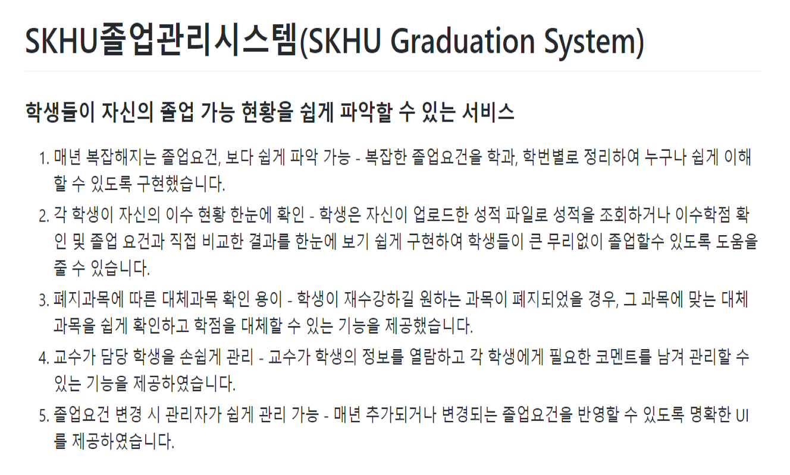
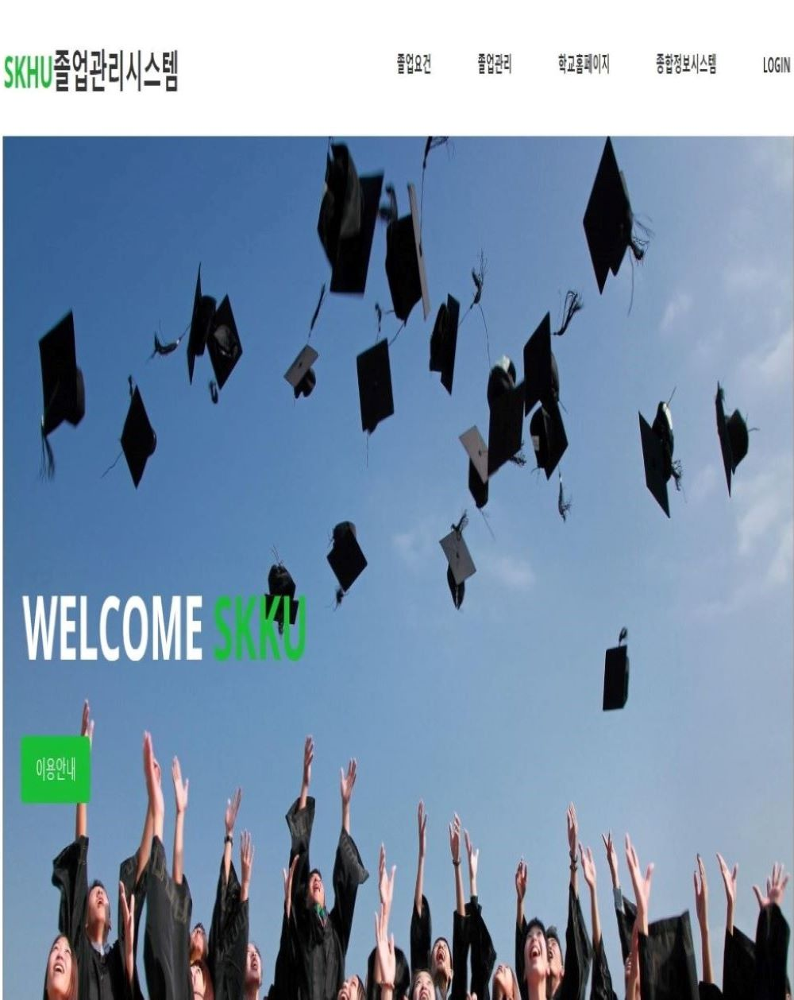
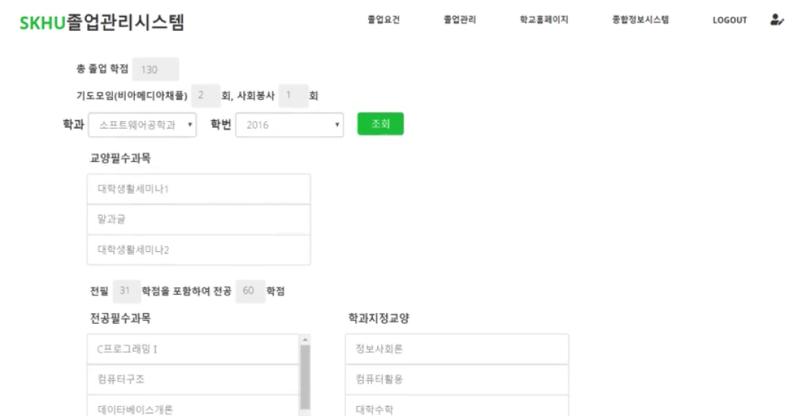

[ 주요 기능 ]
[ 메인 화면 ]
[ 나의 졸업 현황 화면 ]
SKHU 졸업관리시스템
Web 프로젝트
2018.09 ~ 2018.12 (4달간)
| 장예지 | 디자인 총괄, 물리 DB 모델링, Front-End, Back-End |
| 오지현 | 물리 DB 모델링, Front-End, Back-End |
| 김지연 | 전체 DB 설계, Front-End, Back-End 총 담당 |
| 정자영 | 팀장, 프로세스 설계, Front-End |
| 이영 | 프로세스 설계, Front-End |
대학교 재학 시절 졸업 사정을 쉽게 조회하고 관리할 수 있는 교내 졸업관리시스템을 개발한 경험이 있습니다. 졸업 사정은 학과/학번/특별과정에 따라 기준이 달라 졸업 요건을 파악하고 공부하는데 어려움이 있었고, 또한 초기데이터로 다양한 학번의 수업 이력과 성적 데이터가 필요했기 때문에 데이터 수집하는데도 많은 어려움을 겪었습니다.
당시 팀원 모두 웹 프로젝트를 처음 진행하는 상황이라 eXERD와 같은 E-R모델링 도구를 알지 못해 팀원들과 화이트보드에 테이블과 관계를 정리하며 ER diagram을 그려갔던 기억이 있습니다. 원활한 협업과 형상관리를 위해 Github을 사용하였고 각 기능별 branch를 구분하여 작업하였습니다.
처음 해보는 웹 프로젝트였기에 많이 깨지고 부딪혔으나 새로운 도전과 그 도전에서 오는 성취감에 개발의 즐거움을 느끼게 되었습니다. 사용자의 편의성을 생각하며 편리한 UI/UX를 제공하기 위한 Front 구현과 다양하고 핵심적인 기능을 제공하기 위해 Back을 개발한 경험이 큰 도움이 되었습니다. 이러한 노력과 팀만의 강점을 살려 학과 경진대회에서 1등이라는 결과를 얻을 수 있었고, 유지 보수하여 교내 IT 경진대회에서 또한 대상이라는 성적을 거둘 수 있게 되었습니다.